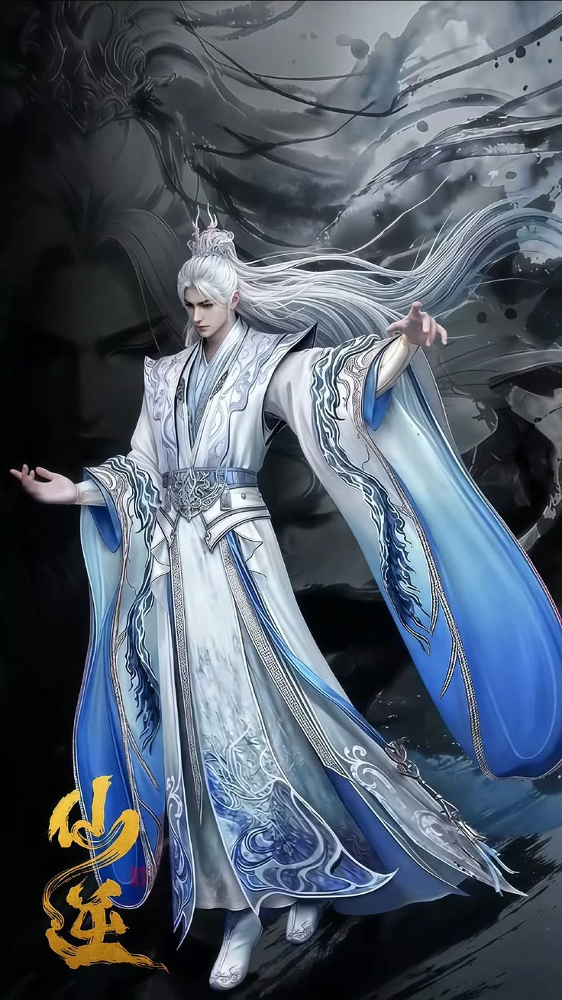
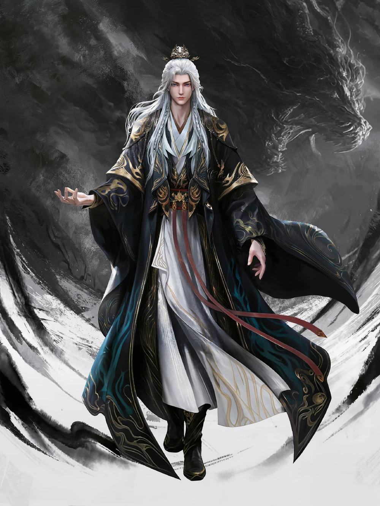
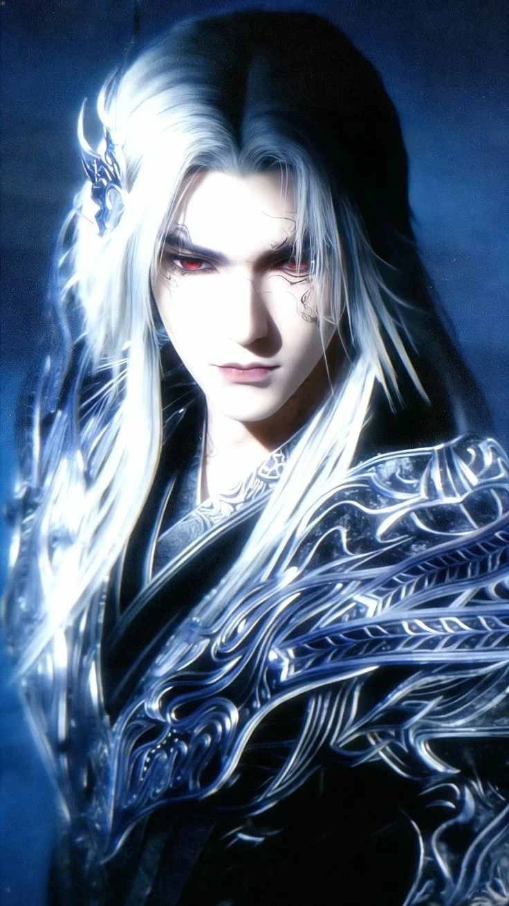
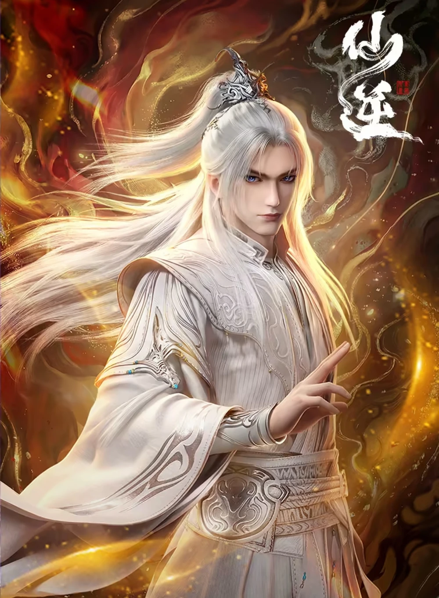

 |
Chinese Name | 王林 |
|---|---|---|
| English Name | Wang Lin | |
| Burma Name | ဝမ်လင် | |
| Age | 15 (Start) 3000+ (End) 4 Billion+ (AWWP) | |
| Country | Country of Zhao | |
| Gender | Male | |
| Height | 6 ft | |
| Spouse(s) |
|
Family About
Wang Lin (王林): The main character of the series. He was born in a poor village family. At first, he only wanted to protect his parents and help his family with their debts. Unlike many xianxia heroes, Wang Lin has very poor talent for cultivation and even fails the test to join the Heng Yue Sect. His life changes after he finds the mysterious Heaven Defying Bead (天逆珠). After the cultivator Teng Huayuan kills his entire family, Wang Lin becomes cold, careful, and ruthless. He survives by using planning, traps, patience, and intelligence instead of natural talent. Unlike many cultivators who only seek power, Wang Lin’s true goal is to revive his parents and his wife, Li Muwan, by going against the Heavenly Dao.[2][3]
Personality
His goal is to become an Immortal so he doesn't disappoint his parents, Fourth Uncle, family, and the expectations of the people from his village. Even though he was intelligent, he didn't like killing. The simple nature of a native villager was ingrained in him. But after the death of his parents and relatives, Wang Lin became vicious and did not hesitate to kill those that offended him. During his youth, Wang Lin was smart, curious, cautious but simple-minded. He's also have a tenacious will as shown by the Heng Yue Sect second test, forcing himself until he lost his mind, or when he studied restriction on the restriction mountain. He shows great love and filial piety towards his parents, striving to meet their expectations of him by becoming an Immortal. However, Wang Lin's initial entry into the treacherous cultivation world was an arduous one due to his mediocre talent. To survive, Wang Lin's character grew more cunning and resolute.
Background
Born as a mortal without anything special. Before the Heng Yue Sect disciple selection event, Wang Lin's dream was to pass the State Exam and enter the court to make his parent proud and respected by other. Wang lin become a powerful cultivator to save his wife, Li muwan.
| Year | Item | Title | Author | Role |
|---|---|---|---|---|
| 2023 | 1 | Renegade immortal | Er Gen | Wang Lin |
Trailer


